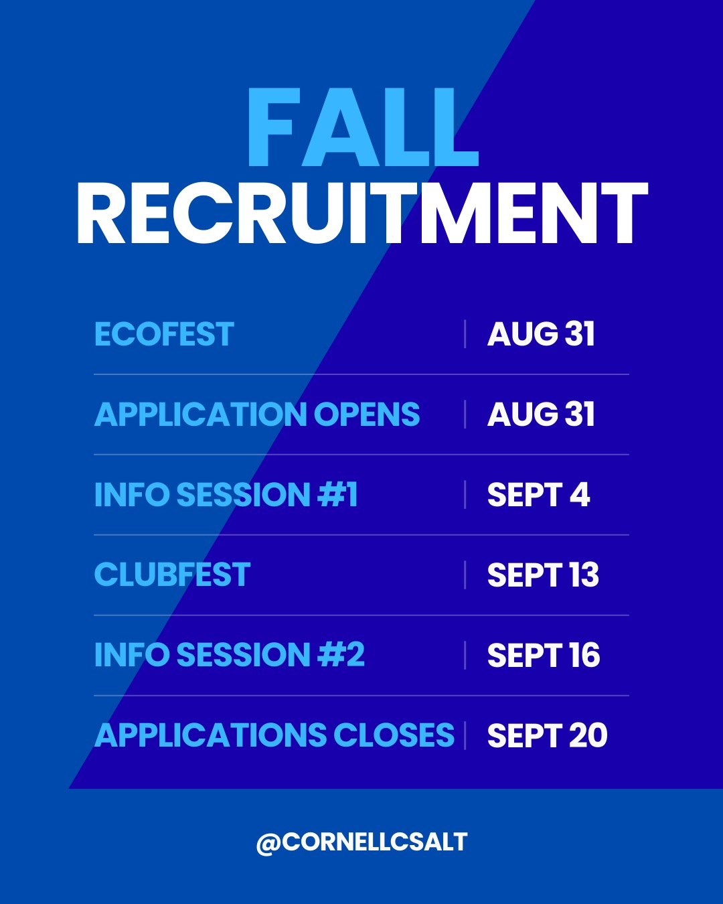

Join the Team

Thank you for your interest in joining our team! We are always looking
for new students to join us on our journey of exploring the future of
wave energy and green technology.
We seek students from a diverse range of academic disciplines, including
(but not limited to) Engineering, Business, Marketing, Communications,
Environmental and Public Policy, and Social Sciences.
For any questions about our team or updates on our projects, please
reach out to us at csaltcornell@gmail.com.